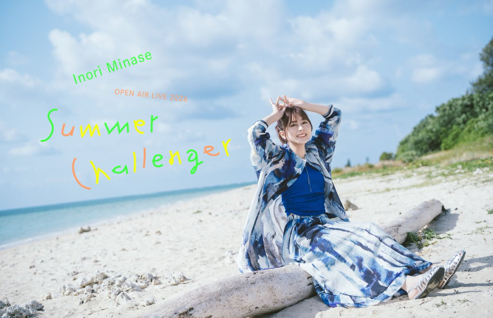
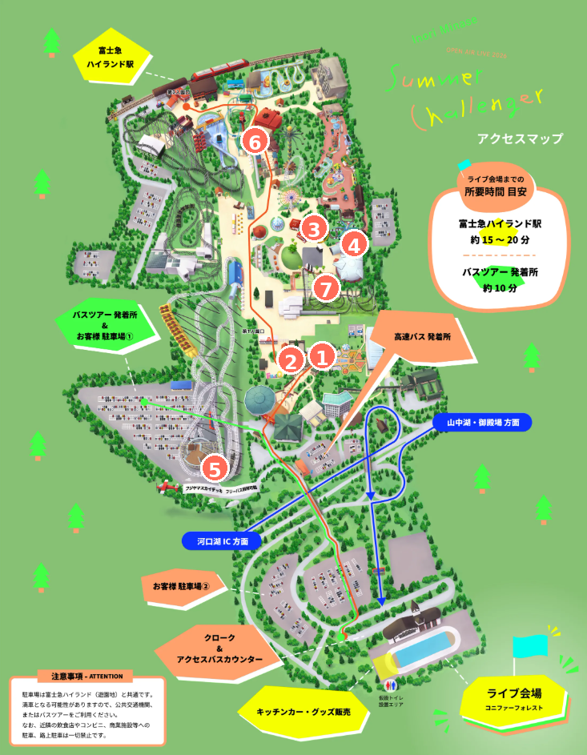

DAY 1 9/12 SAT
07:30 宮崎台 出発
10:30 リゾートイン芙蓉 到着
11:00 グッズ & フードパーク
15:30 開場
17:00 LIVE START
19:30頃 終演予定 → ホテル

TODAY
2026.09.12 — 09.14
SCHEDULE
07:30 宮崎台 出発
10:30 リゾートイン芙蓉 到着
11:00 グッズ & フードパーク
15:30 開場
17:00 LIVE START
19:30頃 終演予定 → ホテル
11:00 グッズ & フードパーク
15:30 開場
17:00 LIVE START
19:30頃 終演予定 → ホテル
09:00 富士急ハイランドへ
聖地巡礼・コラボ・園内散策
19:00 富士急営業時間終了予定
LIVE INFORMATION
会場
富士急ハイランド・コニファーフォレスト
開場 15:30 開演 17:00 終演予定 19:30
MAP & PILGRIMAGE

※現地では公式MAPも併用。アトラクションは天候・点検等で運休する場合があります。
PACKING CHECK LIST
この端末では次回から選んだリストを自動表示します。